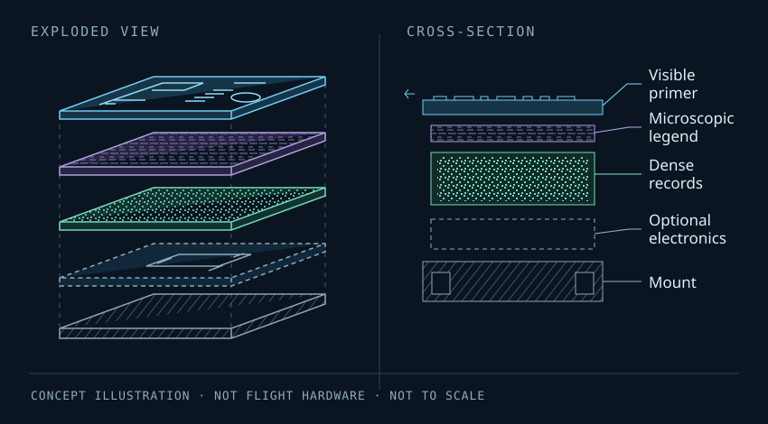
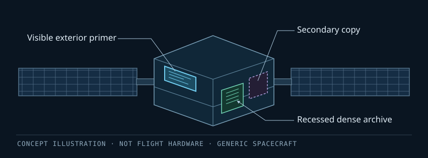

Decoding and engineering
How could an unfamiliar reader go from markings on a spacecraft to a recoverable record of Earth? The proposed design starts with features a reader can inspect without onboard power.
The project has demonstrated image reconstruction and bounded record recovery from digital samples. Fabrication, physical readout, independent human interpretation trials and environmental qualification remain open.
Four-layer archive architecture
- Physical decoding primer. Visible engraved patterns help a reader find and orient the carrier. Repeated features and paired coarse and fine marks show where to magnify and how to establish a measurement scale.
- Binary decoding instructions. Paired marks and worked image examples introduce two states, reading order, image dimensions, record boundaries and the information needed to check and reconstruct records.
- Scientific and cultural content. Diagrams, reference images, measurement examples and a visual vocabulary aim to make essential knowledge accessible across languages. Whether an unfamiliar reader can infer their meaning remains an open research question.
- Complete digital archive. A proposed dense encoding would store the full contents of the chosen edition, with specifications, identifiers, provenance and a recoverable inventory. The verified development ZIP is the Earth-side package and uses conventional file formats.
Carrier and placement
An inspectable exterior marker could lead to a protected, more densely marked plate or stack. Passive media would require a suitable external reader, such as optical magnification. Semiconductor storage could provide an additional readout path if approved, with its own power, controller and interface dependencies.
Repeated location markers and independently accessible copies could limit the effect of localized damage. The benefits depend on where the copies can be mounted and whether they share failure modes. Material, mark density, shielding, mounting and readout access depend on measured performance and spacecraft constraints.


Candidate media and readout
The first design trade compares usable density, mass and damage tolerance against the equipment needed to reconstruct information. Bench results for one material or part cannot qualify a mounted archive.
| Medium | Readout and maturity | Question to test |
|---|---|---|
| Engraved metal | Visible marks or microscopy. Voyager and the Rosetta Disk offer fabrication precedents. | Contrast and access after abrasion, corrosion, impact, or thermal cycling. |
| Microetched silicon | Magnified imaging. Fabrication process is established and the archive configuration is proposed. | Usable mark pitch, enclosure stress, shocks and localized cracks. |
| Fused silica | Calibrated optical imaging. Demonstrated archival systems use specialized readers. | Layer separability, recovery around damage and durable optical contrast. |
| Optical disc | Powered external optical reader and documented physical encoding. Commercial formats exist. | Layer adhesion and readability after aging, radiation, and mechanical damage. |
| Semiconductor memory | Powered controller and interface. Radiation characterization is part-specific. | Retention, radiation, package, controller failure and access after power loss. |
Archive capacity calculator
Compare a chosen logical content budget with estimated storage, correction overhead and copies. This square-cell model assumes one bit per cell and applies a usable fraction for packing losses. It uses illustrative inputs and gives no credit for shielding performance.
Read capacity before mass. The assembly mass describes the dimensions and materials entered, even when the data will not fit. It is not a mass estimate for a working archive unless the capacity requirement is met, and it is not a qualified spacecraft payload. Fermi Explorer's published payload objective is mission-wide; no allocation to Centauri Archive has been confirmed.
The custom and target presets use the selected percentage. The curated preset uses the calculated per-record protection.
Capacity insufficient: each copy falls short by 113.6 MB. The mass below is for this undersized configuration.
- Estimated raw space per copy
- 1.4 MB
- Protected bytes per copy
- 115 MB
- Logical bytes (one edition)
- 100 MB
- Protection and framing bytes per copy
- 15 MB
- Extra bytes for redundant copies
- 115 MB
- Total encoded bytes
- 230 MB
- Substrate volume per copy
- 1.6 cm³
- Substrate and shield mass per copy
- 5.68 g
- Modeled assembly mass (including shared allowance)
- 16.36 g
Curated encyclopedia scenarios
These projections retain the JPEG collection and sample the measured distribution of current draft lengths. Protected storage includes per-record CAX1 and CAEC overhead. Two copies are shown for comparison.
Loading the source ledger…
Estimate a custom content mix
Use whole square images for an upper-bound comparison. Sizes are hypothetical and separate from the measured archive.
The logical budget includes record framing and attribution. The correction percentage is a study input. The current Reed–Solomon record prototype stores 134 record bytes in each 255-byte protected block, with any final partial block padded. Calculate its storage separately for each record. MB and GB are decimal. Equations and prototype comparison
Recovering information after damage
The software prototype uses Reed–Solomon parity to correct bounded errors and erasures within each aligned block. SHA-256 digests check the reconstructed bytes so a decoder can reject unverifiable blocks and combine verified chunks from separate copies. Recovery depends on enough verified data surviving across those copies.
Try the simulated recovery study with missing indexes and unknown alignment.
Inside a 255-byte CAEC v1 block
57 B metadata · 134 B record content · 32 B block digest · 32 B Reed–Solomon parity. Up to 16 unknown erroneous byte symbols or 32 known erasures per codeword, subject to the mixed-error bound.
Two damaged copies, one recovered record
Controlled damage tests · 260 trials
Zero incorrect outputs accepted in this fixed-seed test suite. Deliberately severe damage is included; these are not mission survival probabilities.
Mission interfaces and verification
Centauri Archive has no confirmed spacecraft allocation or environment. Interface data would determine whether an external primer, a protected carrier and optional powered storage are feasible.
| Topic | Information needed | Status |
|---|---|---|
| Envelope and mount | Mass, dimensions, surface area, geometry, load path, clearance and mounting options. | Unknown |
| Environment | Acceleration, vibration, shock, temperature cycles, radiation, dust and particle impact exposure, and phases and duration. | Unknown |
| Materials and power | Cleaning, contamination, material restrictions, passive and active placement, available power and electrical interfaces. | Unknown |
| Qualification | Integration requirements, deadline, approval and review gates, applicable environmental and materials verification. | Unknown |
Compare etched samples before and after thermal cycling, vibration, radiation and simulated particle impacts. Measure changes in optical contrast, feature resolution and recovery. Evaluate radiation dose and particle exposure at candidate placements, along with retention and single-event effects if electronics are used. Environmental limits and acceptance criteria must come from the spacecraft program.